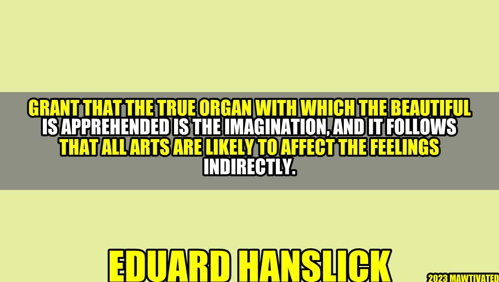

How Imagination Connects Our Emotions to the Arts
Imagine a person who has no access to music, movies, paintings, or any form of art. To them, the world would be a dull and boring place, devoid of any meaning or beauty. Art has the power to elicit deep emotions and move us in ways we can't easily express with words. But what is it about art that touches our souls?
According to Eduard Hanslick, a 19th-century music critic and philosopher, the answer lies in our imagination - the true organ with which we apprehend beauty. In his book Vom Musikalisch-Schönen (On the Beautiful in Music), Hanslick argued that all arts affect our feelings indirectly through the imagination. To understand his theory, let's look at some examples.
Examples of Imagination in the Arts
Visual Arts
When we look at a painting or sculpture, we don't just see the physical object in front of us. We also imagine what lies beyond it - the emotions, concepts, or narratives that the artist intended to convey. For instance, a painting of a stormy sea can evoke feelings of danger, awe, or tranquility, depending on how the artist chose to represent it. Our imagination fills in the gaps, creating a world of meaning and symbolism that transcends the mere appearance of the artwork.
Music
In Hanslick's view, music is the purest form of art precisely because it doesn't rely on concrete images or metaphors to convey its emotional impact. Rather, it appeals directly to our inner sense of harmony, rhythm, and melody. When we listen to a piece of music, we don't just hear a sequence of notes - we also imagine the shapes, colors, and textures that these notes evoke in our mind. We may picture a pastoral landscape, a romantic encounter, or a heroic struggle, all without any explicit verbal or visual cues. Music thus opens up a realm of imagination that is both universal and personal, allowing us to create our own stories and associations based on the musical language that resonates with us.
Literature
Unlike music, literature relies heavily on words to convey its messages. Yet, as any avid reader can attest, the power of literature comes not from the literal meaning of the words, but from the images, emotions, and ideas they evoke in our imagination. A well-crafted novel or poem can transport us to another time, place, or perspective, making us feel as if we're living someone else's life or seeing the world through their eyes. We may not have experienced the events or characters directly, but our imagination fills in the gaps, making them come alive in our mind.
"The simplest definition of art is that it is a work of imitation or representation in language, sound, color, or form. But the deeper definition is that it is a work of imagination – a shaping and ordering of materials by an individual who gives life to a new creation, one that never existed before."
The Role of Imagination in Aesthetics
So, if imagination is the key to appreciating the arts, how does it relate to our emotions? According to Hanslick, it's not the case that art directly imitates or reproduces our emotions, as some philosophers and artists believed. Rather, it's the imaginative stimulus that art provides, which gives rise to a "sympathetic resonance" between our inner life and the outer world. In other words, art creates a bridge between our personal experience and the universal principles of aesthetics, such as harmony, proportion, and balance. Through our imagination, we can grasp the beauty of art not as an isolated object, but as a dynamic relationship between form and content, matter and spirit, individual and community.
Conclusion
- The imagination is the true organ with which we apprehend beauty in all arts, connecting our emotions to the world of meaning and symbolism that lies beyond the physical appearance of the artwork.
- The power of imagination lies in its ability to create a personal and universal realm of meaning, in which we can imagine, interpret, and relate to the aesthetic objects according to our own experiences and values.
- By cultivating our imagination through exposure and reflection on the arts, we can expand our horizons of empathy, creativity, and self-awareness, and enrich our lives with a deeper sense of beauty and purpose.
Curated by Team Akash.Mittal.Blog
Share on Twitter Share on LinkedIn